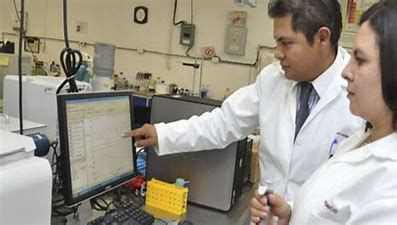

Interaccion humano Servidor
Según la revista insignia (2017). Las maquinas, han estado con nosotros desde el desarrollo temprano de nuestra cultura cultura. Primero es una extensión de los humanos, luego es un artefacto independiente de la manipulación humana. El objetivo principal de la ergonomía es mejorar la calidad de vida de los trabajadores en el entorno laboral, mejorar la calidad de la interacción hombre-máquina y mejorar la eficiencia operativa de las herramientas. El valor de la seguridad, la salud y la satisfacción por el trabajo realizado. Considerar el aspecto humano del diseño es esencial para aumentar la eficiencia de varios tipos de máquinas. Si los humanos se adaptan a las demandas de sus máquinas, se establece una relación entre ellas de tal manera que las máquinas brindan información a los humanos a través del aparato sensorial humano. Estado de la máquina con varios controles. Los humanos podrán corregirlos a través de sus sentidos. Por lo tanto, la información fluye de la máquina a la persona y de vuelta de la persona a la máquina en un circuito cerrado de control de la información. En el transcurso del desarrollo histórico del trabajo, debemos considerar que hemos llegado a un punto en el desarrollo tecnológico que obliga a las personas a operar elementos de control en base a una gran cantidad de información recibida en el tiempo. decisión porque pierdes flexibilidad. Depende no sólo del operador, sino también de la instalación y, en algunos casos, del número de personal, que es difícil de cuantificar. Con el correcto diseño del puesto de trabajo, la información proporcionada por la máquina es adecuada a las condiciones del operador, cumple con los requisitos dentro de los límites de la neurofisiología humana, y de ella dependen todas las aplicaciones de la ergonomía a realizar.
Recuperado de Blogs el insignia - RELACIÒN HOMBRE-MÀQUINA (2017) Recuperado de: https://elinsignia.com/2017/05/31/relacion-hombre-maquina/